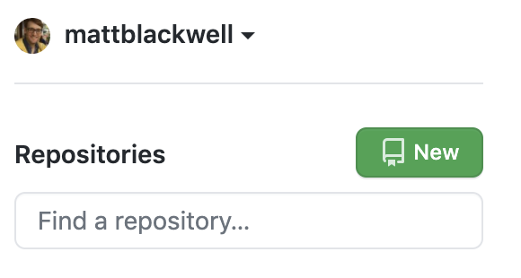
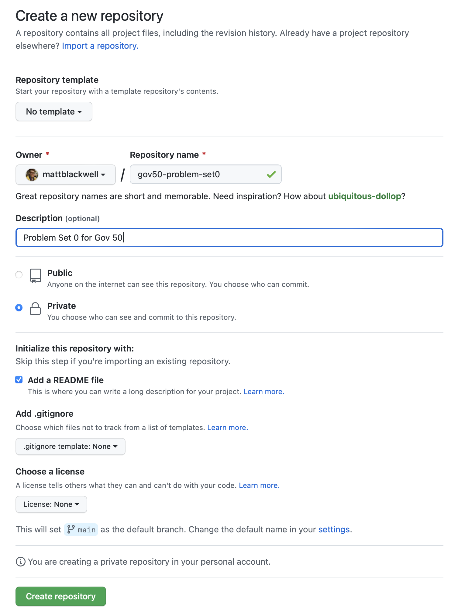
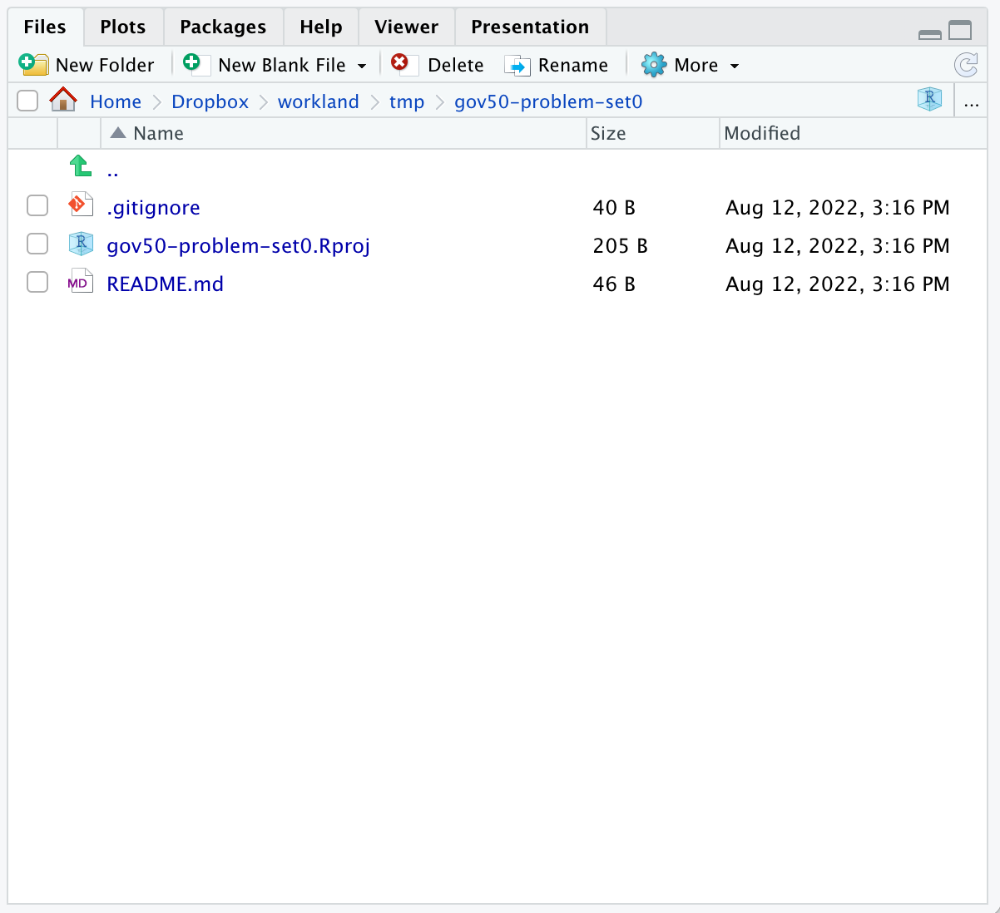
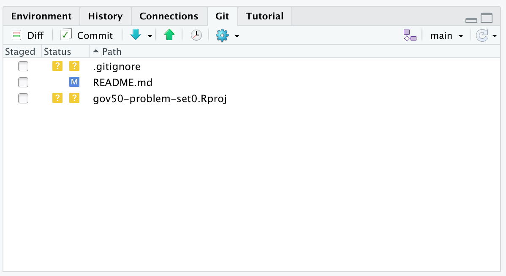
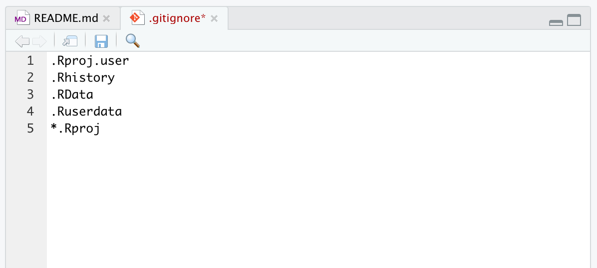
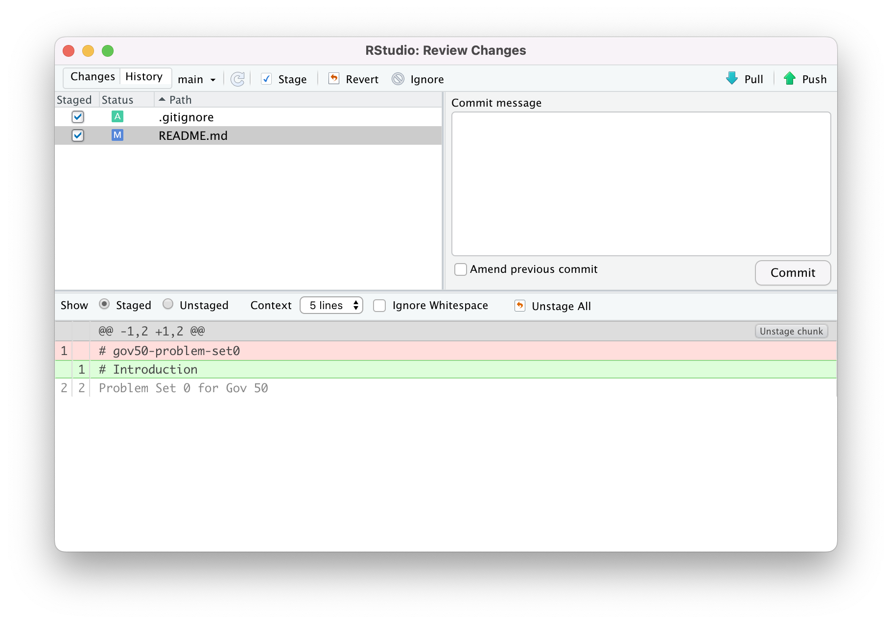
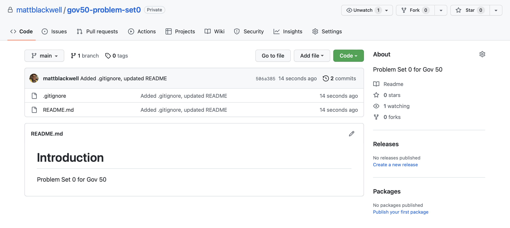

my_packages <- c("tidyverse", "usethis", "devtools", "learnr", "tinytex")
install.packages(my_packages, repos = "http://cran.rstudio.com")
remotes::install_github("kosukeimai/qss-package", build_vignettes = TRUE)Getting Started with R, R Studio, Git, and Github
Installing R and RStudio
In this problem set, we’re going to get R, RStudio, and R Markdown set up on your computer. To get started, follow these steps:
- Download and install the most recent version of R. There are versions available for the Windows, Mac, and Linux operating systems. On a Windows machine, you will want to install using the
R-x.y.z-win.exefile wherex.y.zis a version number. On a Mac, you will want to install using theR-x.y.z.pkgfile that is notarized and signed. - With R installed, download and install RStudio. RStudio is a type of “integrated development environment” or IDE designed for R. It makes working with R considerably easier and is available for most platforms. It is also free.
- Install the packages we will use throughout the semester. To do this, either type or copy and paste each of the following lines of code into the “Console” in RStudio (lower left panel by default). Make sure you do this separately for each line. If you are asked if you want to install any packages from source, type “no”. Note that the symbols next to
my_packageare a less than sign<followed by a minus sign-with no space between them.
- For some things in the course, we’ll need produce PDFs from R and that requires something called LaTeX. If you’ve never heard of that, it’s completely fine and you should just run the following two lines of R code:
install.packages('tinytex')
tinytex::install_tinytex() # install TinyTeXInstalling and configuring git
Git is a version control program that helps organize the process of writing and maintaining code. It allows you to maintain a history of edits to your code without having to resort to a set of files like:
my_code.R
my_code_v1.R
my_code_v2_FINAL.RThere’s a lot to git and it will be harder to use in the beginning, but in the long term there are huge benefits of it. First, when you use git, you are much less likely to encounter a devastating data failure. All of your (committed) changes to your project are preserved, even when you make new changes or you revert old changes.
Git is also a very useful way for people to collaborate. There is a huge community built up around it. And once your projects are publicly available on Github (a website for hosting git repositories), there are a host of ways that folks can collaborate with you.
Install git
You might already have git installed on your computer, especially if you have a Mac. To check, in RStudio, click on the Terminal tab in the bottom-left panel (next to the Console tab). Type git --version at the command prompt. If you get a response with a version number, great you are all set. If you get any kind of error message, you learn how to install git on your machine here.
Setup a GitHub account
Next, you can setup a GitHub account. You can think of GitHub as similar to Dropbox or Google Drive for your git projects (“repositories”) where everything is public by default. Since you might use this account to interact with potential employers in the future, you should probably pick a professional username.
Once you have a GitHub account, you can configure your local git program to interact with your account gracefully. Run the following two lines of code in the Terminal replacing "John Harvard" with your name and "john@harvard.edu" with your email address used to sign up for GitHub.
git config --global user.name "John Harvard"
git config --global user.mail "john@harvard.edu"Creating your first repo
Once you are logged into Github and at its homepage, you can now create a new repo (shorthand for “repository”). These repositories are like folders in Dropbox except a bit more structured. Create one by clicking on the green “New” button in the top-left of the screen next to “Repositories.” It should look like this:

Now a new screen should pop up requesting some information for the new repo. Give this new Repository the name gov50-problem-set0 and set it to be a private repository. You can give it an informative description and check the “Initialize this repository with a README” checkbox. This latter option will add a README to the repository where you can add more information that will display nicely in the repository’s homepage. Your setup should look something like this:

Once you create your repo, you are ready to connect it to RStudio on your local computer. The easiest way to do this is go to the repo homepage (you’re already there if you’ve just created it) and click on the green “Code” button toward the top right of the page. When you click that, a popup will appear and you can copy the URL (you can click the little clipboard icon to copy this automatically).

Now, switch to RStudio. Go to the menu bar and hit “File > New Project”. You can then choose what type of project to start. Since we’re importing from Github, we’ll use the “Version Control” option (it’s the bottom of the list). In the next menu, choose “Git”. Now, you can paste the URL in the “Repository URL” box. Choose a set of local directories to place this project and hit “Create Project”. And now you’ll have your project ready to go in RStudio.
Working with a project in RStudio
You’ll see in the bottom right window of RStudio you’ll now see the files from your Github project.

Let’s edit the README file by clicking on README.md in that file pane and you’ll be able to edit it in the top-left pane. Change the header from # gov-50-problem-set0 to # Introduction and save the file (⌘+S or Ctrl+S). If you click on the “Git” tab in the top right panel, you will a list of the changes you’ve made to the repo since the last commit (you can think of a commit as a more permanent type of saving work to the git repo).

One thing you’ll notice here is that git thinks that gov50-problem-set0.Rproj is a file that maybe should go into the repo. But this file is just for our local copy of RStudio and shouldn’t really go into the repo. To prevent git from bothering us about it every time we open something, we can modify the .gitignore file to tell git to ignore certain files. Open .gitignore and add a new line with *.Rproj on it to tell git to ignore any file with the extension .Rproj. Make sure to save the file.

If you go back to the Git tab in the top right and refresh (little circular arrow in the top right corner), you see that gov50-problem-set0.Rproj is removed from our list. Now we are ready to commit our changes. Click the “Staged” box for .gitignore and README.md and hit the “Commit” button just above the file list. You’ll see a window with the changes that you are about to commit.

You can click on different files to see what exactly you are changing. Add a short but informative commit message that describes what you are committing and hit “Commit”. Once this completes, you can hit the “Push” button in the top right to push that commit back to Github. If you go back to your repo’s homepage on Github and refresh the page, you’ll see the updates to your README file and the new .gitignore.

And you’re done! You’ve just created your first repo.